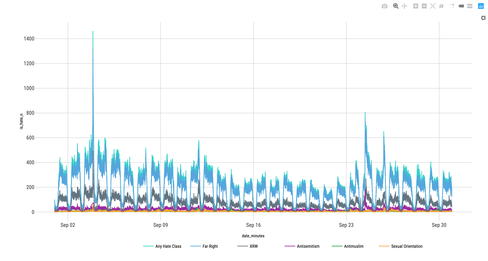

Last updated: 2019-11-04
Checks: 7 0
Knit directory: hatelab_website/
This reproducible R Markdown analysis was created with workflowr (version 1.4.0). The Checks tab describes the reproducibility checks that were applied when the results were created. The Past versions tab lists the development history.
Great! Since the R Markdown file has been committed to the Git repository, you know the exact version of the code that produced these results.
Great job! The global environment was empty. Objects defined in the global environment can affect the analysis in your R Markdown file in unknown ways. For reproduciblity it’s best to always run the code in an empty environment.
The command set.seed(20191014) was run prior to running the code in the R Markdown file. Setting a seed ensures that any results that rely on randomness, e.g. subsampling or permutations, are reproducible.
Great job! Recording the operating system, R version, and package versions is critical for reproducibility.
Nice! There were no cached chunks for this analysis, so you can be confident that you successfully produced the results during this run.
Great job! Using relative paths to the files within your workflowr project makes it easier to run your code on other machines.
Great! You are using Git for version control. Tracking code development and connecting the code version to the results is critical for reproducibility. The version displayed above was the version of the Git repository at the time these results were generated.
Note that you need to be careful to ensure that all relevant files for the analysis have been committed to Git prior to generating the results (you can use wflow_publish or wflow_git_commit). workflowr only checks the R Markdown file, but you know if there are other scripts or data files that it depends on. Below is the status of the Git repository when the results were generated:
Ignored files:
Ignored: .DS_Store
Ignored: .Rhistory
Ignored: .Rproj.user/
Ignored: docs/.DS_Store
Ignored: docs/assets/.DS_Store
Untracked files:
Untracked: data/hatedash_comparison_skim.rds
Note that any generated files, e.g. HTML, png, CSS, etc., are not included in this status report because it is ok for generated content to have uncommitted changes.
These are the previous versions of the R Markdown and HTML files. If you’ve configured a remote Git repository (see ?wflow_git_remote), click on the hyperlinks in the table below to view them.
| File | Version | Author | Date | Message |
|---|---|---|---|---|
| Rmd | 8ab4085 | Sefa Ozalp | 2019-11-04 | add Han’s comments |
| html | 727cdf3 | Sefa Ozalp | 2019-11-04 | Build site. |
| Rmd | 41fe9f3 | Sefa Ozalp | 2019-11-04 | add summary stats and java code |
| html | 9f030c9 | Sefa Ozalp | 2019-11-04 | Build site. |
| Rmd | fd875c5 | Sefa Ozalp | 2019-11-04 | finalise hatedash check and edit index |
| Rmd | f8a196b | Sefa Ozalp | 2019-11-03 | add html viz from dash and from plotly |
| html | f8a196b | Sefa Ozalp | 2019-11-03 | add html viz from dash and from plotly |
| html | 485cb9d | Sefa Ozalp | 2019-11-03 | Build site. |
| Rmd | a64dfd6 | Sefa Ozalp | 2019-11-03 | wflow_publish(“analysis/hatedash_check.Rmd”) |
| html | 47442b5 | Sefa Ozalp | 2019-11-03 | Build site. |
| Rmd | 8ed1c0e | Sefa Ozalp | 2019-11-03 | wflow_publish(“analysis/hatedash_check.Rmd”) |
| html | 8a193f9 | Sefa Ozalp | 2019-11-03 | Build site. |
| Rmd | 82c7caa | Sefa Ozalp | 2019-11-03 | wflow_publish(“analysis/hatedash_check.Rmd”) |
| html | 261d292 | Sefa Ozalp | 2019-11-03 | Build site. |
| Rmd | ea1d03b | Sefa Ozalp | 2019-11-03 | wflow_publish(“analysis/hatedash_check.Rmd”) |
| html | 4c5f4b7 | Sefa Ozalp | 2019-11-03 | Build site. |
| Rmd | 85dcda1 | Sefa Ozalp | 2019-11-03 | wflow_publish(“analysis/hatedash_check.Rmd”) |
| html | b1c504f | Sefa Ozalp | 2019-11-03 | Build site. |
| Rmd | 552470b | Sefa Ozalp | 2019-11-03 | wflow_publish(“analysis/index.Rmd”) |
| html | 552470b | Sefa Ozalp | 2019-11-03 | wflow_publish(“analysis/index.Rmd”) |
| html | 632b8a1 | Sefa Ozalp | 2019-11-03 | Build site. |
| Rmd | 20d6867 | Sefa Ozalp | 2019-11-03 | wflow_publish(“analysis/hatedash_check.Rmd”) |
Currently, line graphs in the Hate Speech Dashboards (HSD) for tweets classified with different classifiers look counter-intuitive. For most classifiers, classification results seem disproportionately high. This has been prompting us to think our HS classifiers perform poorly i.e. too many false positives are outputted. Although this might be the case to a certain extent, we are not sure if this is the only culprit. Put simply, deployment of classifiers and post classification data aggregation might also be the reasons why we observe counter-intuitive trends.
This document will present a fact checking exercise for the dashboard. Drawing on a same dataset collected with COSMOS 1.5 during September 2019, I will produce the same line charts as the HSD using same classifiers. The difference is, I will collect, process, classify and finally visualise the same dataset independently.
Currently, the HSD visualises six different classification results (counts of tweets classified as Yes class) over time on the same line chart. We have different lines representing:
The ‘Brexit’ data collection has been running since April 2019 on the HSD. When we select dates from September 01 to September 31, we get the following visualisation:
Brexit collection for September 2019 on HSD
One can also find the interactive version of the same chart on HSD by querying the existing ‘Brexit’ collection between 1-30 September or through this URL.
Looking at this chart, we immediately observe seasonality effect on tweet counts and observe a diverging pattern between day and night time for all classifiers. It is expected to observe some seasonality as the ‘Yes’ class results are expected to differ in volume based on the number of tweets sent during particular minute (More tweets more likely to produce hate in absolute numbers). This does not mean our classification results are not simply a function of the tweets sent per minute. Our previous research findings have illustrated peaks and troughs following relevant offline events (e.g. terror attacks, offensive speech by influential political figures etc).
Although some seasonality is expected across all classifiers, we also expect independent trends for each classifier. It does not make much sense to observe extremely similar patterns across all classifiers using the Brexit tweets. One would reasonably expect classifiers trained on distinct topics, such as sexual orientation and anti-Semitism, to have different patterns when same dataset is used over the same period of time.
Currently, this is not the case in the HSD. While anti-Semitism classifier displays less than 50 tweets (tpm) for almost any given minute, total number of tweets classified as any type of hate (i.e. Posts) are almost always over 300 tmp. On the surface, this might not be problematic per se. One could suggest anti-Semitism occurs less on Twitter compared to combination of all hate types, possibly indicating anti-Semitism classifier is less lenient than others. However, inspection of other classifiers suggests there is actually a problem. Especially the patterns for the Sexual Orientation and Antimuslim classifiers are interesting. To observe these two classifier results, it is necessary to turn off the ‘Posts’ line (combination of all classifiers) using the cyan legend. Once this is done, we see that Sexual Orientation and Anti-Muslim class are hidden behind it. This is because ‘Posts’, Sexual Orientation and Antimuslim classifier results are very similar to each other. When the whole month is observed, it is almost impossible to distinguish the latter two classifiers from the ‘Posts’. In fact, with a very minor margin of error, it can be suggested that Sexual Orientation and Antimuslim classification results are identical to each other and the ‘Posts’ (all HS tweets) are heavily influenced by these classifiers (as its a combination of all classes). It is not logical for same tweets to be classified as ‘Yes’ class by both Antimuslim and sexual orientation classifier, especially for the whole month. Therefore, one can safely suggest that the outputs from these classifiers are not accurate in the HSD and they must be investigated.
For the XRW classifier, the number of tweets are close to ‘Posts’. Moreover, the peak and trough patterns look identical to ‘Posts’ (and therefore Antimuslim and sexual orientation classifiers). Same thing can be said for the the peak and trough patterns of far right classifier which has the same increase/decrease patterns as the XRW classifier but sticks to a different baseline. I’d like to remain conservative about commenting the performance of these classifiers as they are quite new (I have not observed how they behave on unseen datasets) but currently their outputs seem to be a function of the total number of tweets.
To test the accuracy of visualised classification results in the HSD, I decided to replicate all steps the HSD does independently and created the line chart. I started a data collection in COSMOS 1.5 using ‘brexit’ keyword. I then selected all tweets sent between September 01-30. This resulted in a dataset with 15.3M tweets. The descriptive stats for this dataset is provided below:
Skim summary statistics
n obs: 15300184
n variables: 5
Variable type: character
variable missing complete n min max empty n_unique
----------- --------- ---------- ---------- ----- ------ ------- ----------
id_str 0 15300184 15300184 19 19 0 15300183
text_long 0 15300184 15300184 1 1012 0 4073907
Variable type: logical
variable missing complete n mean count
------------ --------- ---------- ---------- ------- ------------------------------------
is_reply 0 15300184 15300184 0.097 FAL: 13819919, TRU: 1480265, NA: 0
is_retweet 0 15300184 15300184 0.75 TRU: 11548394, FAL: 3751790, NA: 0
Variable type: POSIXct
variable missing complete n min max median n_unique
------------------ --------- ---------- ---------- ------------ ------------ ------------ ----------
timestamp_parsed 0 15300184 15300184 2019-09-01 2019-09-30 2019-09-12 2385462 Next, I classified these tweets using 5 different classifiers that are deployed to dash and created a logical/boolean field for tweets that are classified as hate by any of the classifiers (Posts equivalent). To call classifiers (.model files), I used the following code which uses the index of the ‘No’ class to 0.0 and the index of the ‘Yes’ class to 1.0 while calling the classifiers. Here is a sample code calling the AntiMuslim classifier on a csv file that contains all 15.3M tweets.
java -jar /scratch/scwc0004/RandProject/JARFiles/classifiers_csv.jar /scratch/c.c1541911/brexit_sole_keyword/data/dash_comparison/ /scratch/scwc0004/RandProject/Classifiers/Anti-muslimClassifier.model Anti-muslimClassifier 1 0 No,YesFinally I joined all classification results with the raw dataset, aggregated tweets by minute and then visualised the results. To achieve maximum visual similarity, I’ve used same colours as the HSD. If the deployment of our classifiers and all other procedures implemented in HSD are correct, I expect the line chart I created independent of the HSD to be identical to the line chart in the HSD. If both visualisations are not exactly the same for each classifier, then we need to explore the discrepency further and maybe investigate the deployment of classifiers in HSD. You can see the chart I created here: . The interactive version of the same plot which enables user to zoom in/out and turn on/off lines by clicking on the corresponding legend can be found here.
As can be seen in the interactive plot, the line chart I created contains many differences to the HSD. Although we observe a seasonality pattern to the line chart in the HSD, almost all classifiers except the anti-Semitism one looks different. First, the Far Right classifier displays the highest number of tweets amongst all classifiers. In fact, now the any hate class (‘Posts’ in the dash legend) seems to be heavily influenced by the FR class. XRW class has the second highest numbers. What’s interesting is in the HSD, XRW had consistently higher numbers than FR classifier. This might be a simple name mismatch when both these classifiers are deployed.
The biggest difference between my results and the HSD are observed for Sexual Orientation and Antimuslim classifiers. In the HSD, these classifiers had identical peak and trough patterns and had highest number of tweets per minute compared to all other classifiers. In the line chart I created, these classifiers are close to bottom of the Y axis. Their patterns look similar but, this is mostly because of their small numbers per minute relative to FR and XRW classifiers. When zoomed in, one can see they display different patterns.
I’ve checked the mismatch between HSD and with a member of HateLab, Han Liu, who developing the .model files and his comments are:
I have looked at the chart and Sefa’s write-up. If the same .model files have been used, I have no idea why the charts created by Sefa and the ones created by the dashboard are very different. The only thing I can guess is that there may be different forms of outputs that they used, i.e. the class output can be in string (‘No’ and ‘Yes’) or in index (0.0 or 1.0), which may cause that an output with the ‘No’ class is treated as an output with the ‘Yes’ class if the output is in the form of an index. However, Mo and I have previously made it consistent by setting the index of the ‘No’ class to 0.0 and the index of the ‘Yes’ class to 1.0 for all the data sets and the model files. Therefore, we do not know why the differences occur.
I recognise that the classification performance of each classifier ( as observed by the F-measure) varies across the board. Some classifiers are experimental and expected to output more ‘Yes’ class. I also recognise that we will observe some seasonality in tweets classified as HS as we are displaying absolute numbers (rather than ratios per minute). Similarly, FR and XRW classifiers seem to have different patterns in the HSD but this might be a simple misnaming issue. Still an important one that warrants an inspection though.
Considering above, I believe the deployment of classifiers in the HSD warrants an investigation by both HateLab (classification performance) and GoFore team (deployment of classifiers). For the former, my suggestion is to investigate all classifiers and how they perform on unseen data, especially focusing on the FR and XRW as they seem to output much more ‘yes’ class compared to other classifiers. For the latter, my suggestion is to inspect the deployment of models as either the deployment or post-classification aggregation of results might be resulting in problematic numbers.
sessionInfo()R version 3.6.1 (2019-07-05)
Platform: x86_64-apple-darwin15.6.0 (64-bit)
Running under: macOS Mojave 10.14.6
Matrix products: default
BLAS: /Library/Frameworks/R.framework/Versions/3.6/Resources/lib/libRblas.0.dylib
LAPACK: /Library/Frameworks/R.framework/Versions/3.6/Resources/lib/libRlapack.dylib
locale:
[1] en_GB.UTF-8/en_GB.UTF-8/en_GB.UTF-8/C/en_GB.UTF-8/en_GB.UTF-8
attached base packages:
[1] stats graphics grDevices utils datasets methods base
other attached packages:
[1] forcats_0.4.0 stringr_1.4.0 dplyr_0.8.3 purrr_0.3.2
[5] readr_1.3.1 tidyr_1.0.0 tibble_2.1.3 ggplot2_3.2.1
[9] tidyverse_1.2.1 skimr_1.0.7
loaded via a namespace (and not attached):
[1] Rcpp_1.0.2 highr_0.8 cellranger_1.1.0 pillar_1.4.2
[5] compiler_3.6.1 git2r_0.26.1 workflowr_1.4.0 tools_3.6.1
[9] zeallot_0.1.0 digest_0.6.21 lubridate_1.7.4 jsonlite_1.6
[13] evaluate_0.14 lifecycle_0.1.0 nlme_3.1-141 gtable_0.3.0
[17] lattice_0.20-38 pkgconfig_2.0.3 rlang_0.4.0 cli_1.1.0
[21] rstudioapi_0.10 yaml_2.2.0 haven_2.1.1 xfun_0.9
[25] withr_2.1.2 xml2_1.2.2 httr_1.4.1 knitr_1.25
[29] hms_0.5.1 generics_0.0.2 fs_1.3.1 vctrs_0.2.0
[33] rprojroot_1.3-2 grid_3.6.1 tidyselect_0.2.5 glue_1.3.1
[37] R6_2.4.0 readxl_1.3.1 rmarkdown_1.15 modelr_0.1.5
[41] magrittr_1.5 whisker_0.4 scales_1.0.0 backports_1.1.4
[45] htmltools_0.3.6 rvest_0.3.4 assertthat_0.2.1 colorspace_1.4-1
[49] stringi_1.4.3 lazyeval_0.2.2 munsell_0.5.0 broom_0.5.2
[53] crayon_1.3.4